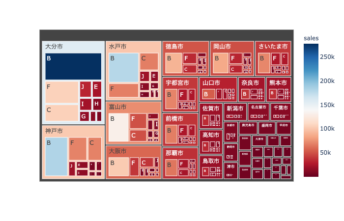
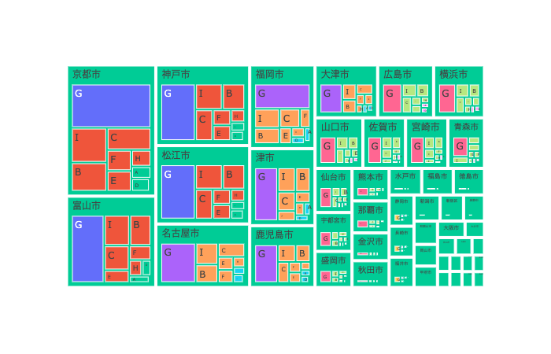
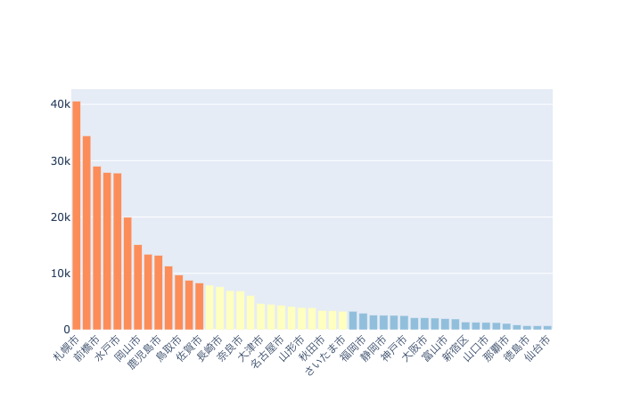
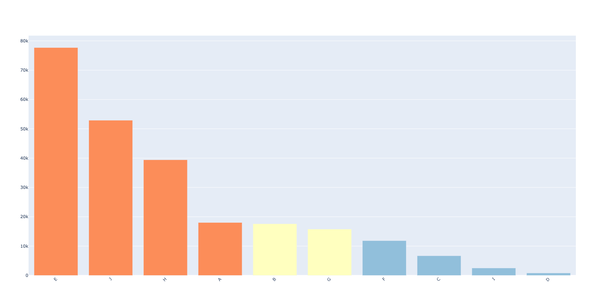
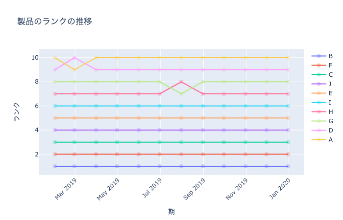
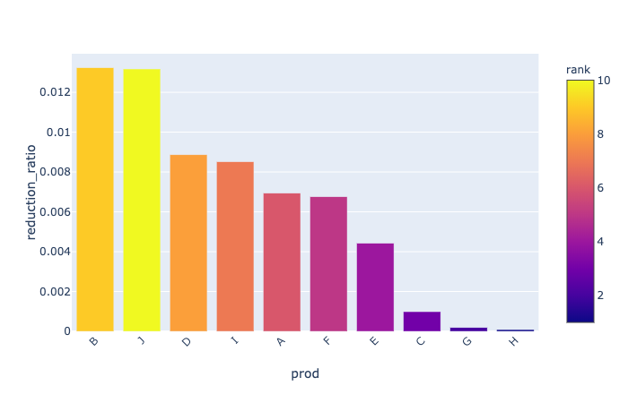
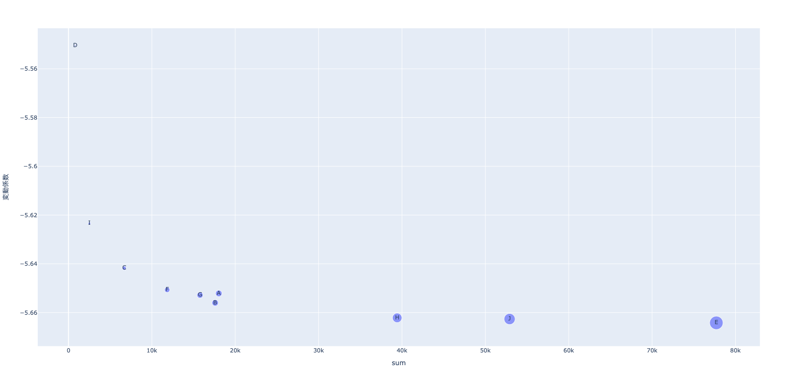
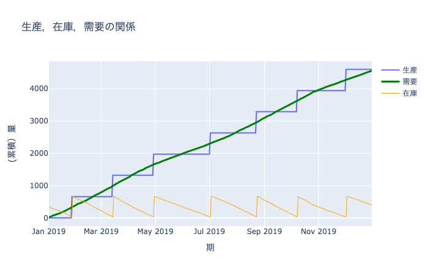

prod_df = pd.read_csv(folder+"Prod.csv",index_col=0)
prod_df.head()| name | weight | volume | cust_value | dc_value | plnt_value | fixed_cost | |
|---|---|---|---|---|---|---|---|
| 0 | A | 2 | 0 | 7 | 1 | 1 | 14 |
| 1 | B | 5 | 0 | 5 | 1 | 1 | 14 |
| 2 | C | 1 | 0 | 5 | 1 | 1 | 19 |
| 3 | D | 3 | 0 | 5 | 1 | 1 | 17 |
| 4 | E | 1 | 0 | 10 | 1 | 1 | 18 |
サプライ・チェイン・アナリティクスで最初に行うことは、需要データに対するABC分析である。 商品の需要量というのは、売れるものはたくさん売れるが、その数はごく少数であり、他のたくさんのそんなに売れない商品が山ほどあるという性質を持つ。 これをパレートの法則（全体の数値の大部分は、全体を構成するうちの一部の要素が生み出しているという理論。別名、80:20の法則、もう1つの別名、ばらつきの法則）と呼ぶ。
ここでは、仮想の企業の需要を生成し、それに対してABC分析を行う。 同時に、商品を売れている順に順位をつけ、順位の時系列的な変化を示すランク分析を提案する。
さらに、簡単な在庫分析を行う。これは、平均需要量や生産固定費用から、生産ロットサイズや安全在庫量を計算するものであり、 古典的な経済発注量モデルや安全在庫モデル（新聞売り子モデル）に基づくものである。
まずは基本となるデータを読み込む。製品データはオプションであり、需要を売り上げや需要を重量や容量で評価したい場合に使う。 基本は、需要データ demand_df だけを使えば十分である。
需要データは以下の列をもつ．
需要量demandと売上の何れかに対して，ABC分析を行う．
| name | weight | volume | cust_value | dc_value | plnt_value | fixed_cost | |
|---|---|---|---|---|---|---|---|
| 0 | A | 2 | 0 | 7 | 1 | 1 | 14 |
| 1 | B | 5 | 0 | 5 | 1 | 1 | 14 |
| 2 | C | 1 | 0 | 5 | 1 | 1 | 19 |
| 3 | D | 3 | 0 | 5 | 1 | 1 | 17 |
| 4 | E | 1 | 0 | 10 | 1 | 1 | 18 |
以下で配布されているデータを読み込む．
https://www.kaggle.com/kyanyoga/sample-sales-data
Kaggleデータを用いたい場合には，以下を実行する． ただし，製品データがないので，製品関連の関数は適用できない．
| ORDERNUMBER | QUANTITYORDERED | PRICEEACH | ORDERLINENUMBER | SALES | ORDERDATE | STATUS | QTR_ID | MONTH_ID | YEAR_ID | ... | ADDRESSLINE1 | ADDRESSLINE2 | CITY | STATE | POSTALCODE | COUNTRY | TERRITORY | CONTACTLASTNAME | CONTACTFIRSTNAME | DEALSIZE | |
|---|---|---|---|---|---|---|---|---|---|---|---|---|---|---|---|---|---|---|---|---|---|
| 0 | 10107 | 30 | 95.70 | 2 | 2871.00 | 2/24/2003 0:00 | Shipped | 1 | 2 | 2003 | ... | 897 Long Airport Avenue | NaN | NYC | NY | 10022 | USA | NaN | Yu | Kwai | Small |
| 1 | 10121 | 34 | 81.35 | 5 | 2765.90 | 5/7/2003 0:00 | Shipped | 2 | 5 | 2003 | ... | 59 rue de l'Abbaye | NaN | Reims | NaN | 51100 | France | EMEA | Henriot | Paul | Small |
| 2 | 10134 | 41 | 94.74 | 2 | 3884.34 | 7/1/2003 0:00 | Shipped | 3 | 7 | 2003 | ... | 27 rue du Colonel Pierre Avia | NaN | Paris | NaN | 75508 | France | EMEA | Da Cunha | Daniel | Medium |
| 3 | 10145 | 45 | 83.26 | 6 | 3746.70 | 8/25/2003 0:00 | Shipped | 3 | 8 | 2003 | ... | 78934 Hillside Dr. | NaN | Pasadena | CA | 90003 | USA | NaN | Young | Julie | Medium |
| 4 | 10159 | 49 | 100.00 | 14 | 5205.27 | 10/10/2003 0:00 | Shipped | 4 | 10 | 2003 | ... | 7734 Strong St. | NaN | San Francisco | CA | NaN | USA | NaN | Brown | Julie | Medium |
5 rows × 25 columns
kaggle_df["date"] = pd.to_datetime(kaggle_df.ORDERDATE)
kaggle_df.rename(columns={"PRODUCTLINE":"prod", "CITY":"cust", "QUANTITYORDERED":"demand", "SALES":"sales"}, inplace=True)
kaggle_demand_df = kaggle_df[["date","cust","prod","demand","sales"]].copy()
kaggle_demand_df.head()| date | cust | prod | demand | sales | |
|---|---|---|---|---|---|
| 0 | 2003-02-24 | NYC | Motorcycles | 30 | 2871.00 |
| 1 | 2003-05-07 | Reims | Motorcycles | 34 | 2765.90 |
| 2 | 2003-07-01 | Paris | Motorcycles | 41 | 3884.34 |
| 3 | 2003-08-25 | Pasadena | Motorcycles | 45 | 3746.70 |
| 4 | 2003-10-10 | San Francisco | Motorcycles | 49 | 5205.27 |
引数： - 需要データフレーム（需要 demand と売り上げ sales の列を含む）
返値： - Plotlyのtreemapオブジェクト
demand_tree_map (demand_df:pandas.core.frame.DataFrame)
需要と売り上げのtreemapを生成する関数
sales列がない場合には，dataモジュールのdemand_attribute_compute関数を用いてsales（売り上げ）列を計算することができる。
需要のtreemapは，需要の大きさを面積とした階層図であり，売上は色で表現している．

ABC分析のための関数を記述する、基本的には、需要データ demand_df だけあれば良いが、顧客や製品に関連した量を分析に加えたいときには、顧客データ cust_df や 製品データ prod_df も読み込んでおく。
古典的なABC分析では、3つのカテゴリーに製品や顧客を分類していたが、場合によっては4つに分類したい場合もあるだろう。 ここでは、より一般的にユーザーが与えた任意の数への分類を行う関数を準備する、カテゴリーに含まれる需要量を、ユーザーが与えた閾値をもとにして分類を行う。
引数:
返値: 以下の3つのオブジェクトのタプル：
abc_analysis (df:pandas.core.frame.DataFrame, threshold:list[float], agg_col:str, value_column:str, abc_name:str, rank_name:str)
ABC分析のための関数
顧客・製品ごとに需要予測を行う際に，予測しなくても良い組を予め抜き出しておくことが重要になる．そのため，顧客・製品の組に対してABC分析とランク分析を行う関数を準備しておく．
引数:
返値: 以下の3つのオブジェクトのタプル：
abc_analysis_all (df:pandas.core.frame.DataFrame, threshold:list[float])
以下では、製品と顧客に対してABC分析を行い、得られた3種類のデータフレーム（元のデータフレームに列を追加したもの：new_df、製品データフレームagg_df_prod、顧客データフレーム：agg_df_cust）を示す。
#hide - 製品を売り上げを元に4つのクラスに、閾値[0.6, 0.2, 0.1, 0.1]を用いて分類 （これを行うためには、data_generationモジュールのdemand_attribute_compute関数で、Salesの列を生成しておく必要がある。）
agg_df_prod, new_df, category_prod = abc_analysis(
demand_df, [0.4, 0.5, 0.1], 'prod', 'demand', "prod_ABC", "prod_rank")
agg_df_cust, new_df, category_cust = abc_analysis(
demand_df, [0.4, 0.3, 0.3, 0.1], 'cust', 'demand', "customer_ABC", "customer_rank")
new_df.head()| index | cust | prod | demand | sales | abc | rank | prod_ABC | prod_rank | customer_ABC | customer_rank | |
|---|---|---|---|---|---|---|---|---|---|---|---|
| date | |||||||||||
| 2019-01-01 | 0 | 札幌市 | A | 10 | 10 | B | 3 | B | 3 | C | 24 |
| 2019-01-01 | 1 | 札幌市 | B | 10 | 10 | B | 4 | B | 4 | C | 24 |
| 2019-01-01 | 2 | 札幌市 | C | 3 | 3 | C | 7 | C | 7 | C | 24 |
| 2019-01-01 | 3 | 札幌市 | D | 0 | 0 | C | 9 | C | 9 | C | 24 |
| 2019-01-01 | 4 | 札幌市 | E | 37 | 37 | A | 0 | A | 0 | C | 24 |
| demand | rank | abc | |
|---|---|---|---|
| cust | |||
| 佐賀市 | 55317 | 0 | A |
| 静岡市 | 27902 | 1 | A |
| 岡山市 | 22976 | 2 | A |
| 那覇市 | 12990 | 3 | B |
| 京都市 | 11593 | 4 | B |
| sum | std | rank | abc | ||
|---|---|---|---|---|---|
| cust | prod | ||||
| 佐賀市 | E | 17587 | 471.906473 | 0 | A |
| J | 11990 | 322.062341 | 1 | A | |
| H | 8939 | 239.820182 | 2 | A | |
| 静岡市 | E | 8877 | 238.403449 | 3 | A |
| 岡山市 | E | 7310 | 196.151534 | 4 | A |
引数： - df: 製品や顧客のデータフレーム；これにABC分析の結果を追加する． - agg_df: 集約した需要，ABC分類，ランクを保管したデータフレーム；インデックスは製品(prod)もしくは顧客 (cust) - col_name: 追加したいデータの列名；製品の場合にはprod（既定値），顧客の場合にはcust
返値： - df: ランク，ABC分類，集約した需要量を追加したデータフレーム
add_abc (df:pandas.core.frame.DataFrame, agg_df:pandas.core.frame.DataFrame, col_name:str='prod')
引数： - 需要データフレーム（需要 demand，売り上げ sales，customer_ABC, prod_ABCの列を含む； ABC分析で得られたnew_df）
返値： - Plotlyのtreemapオブジェクト
demand_tree_map_with_abc (demand_df:pandas.core.frame.DataFrame)
ABC別に色分けした需要のtreemapを生成する関数

顧客と製品の両方に対するABC分析を同時に行い、結果の図とデータフレームを同時に得るには、この関数を用いる。
引数：
返値：
generate_figures_for_abc_analysis (demand_df:pandas.core.frame.DataFrame, value_name:str='demand', cumsum:bool=True, cust_thres:str='0.7, 0.2, 0.1', prod_thres:str='0.7, 0.2, 0.1')


全ての期に対するランク分析を行う関数 rank_analysis と、期ごと（集約する単位は文字列で与える）のランク分析を行う関数 rank_analysis_all_periodsを記述する。
引数:
返値:
rank_analysis (df:pandas.core.frame.DataFrame, agg_col:str, value_column:str)
全期間分のランク分析のための関数
rank_analysis_all_periods (df:pandas.core.frame.DataFrame, agg_col:str, value_column:str, agg_period:str)
期別のランク分析のための関数
全期間分の顧客需要のランク分析と、３ヶ月を１期とした各期間に対する製品のランク分析。
ランクの時系列的な変化を表す図を生成するための関数。
引数:
返値:
show_rank_analysis (demand_df:pandas.core.frame.DataFrame, value_name:str='demand', agg_period:str='1m', top_rank:int=1)
ランク分析の可視化関数

在庫をサプライ・チェインの上流（供給側）でもつか、下流（需要側）でもつかは、複数の需要地点（顧客）における需要の相関で決まる。 一般には、上流で在庫を共有することによって在庫の削減ができる。これをリスク共同管理 (risk pooling) とよぶ。
ここでは、製品ごとに、顧客の需要の標準偏差とリスク共同管理した場合の標準偏差の差を計算する。 また、それを需要の総量で割った比率（削減率）も計算する。 これは、標準偏差を平均値で割ることによる無次元の指標（変動係数： coefficient of variation: CV)に相当するものである。
この値が大きい製品ほど、リスク共同管理の効果が大きいので、サプライ・チェインの上流で在庫を保持した方が良いことになり、 逆に小さい製品ほど、下流で在庫を保持した方が良いことになる。
引数： - demand_df: 需要のデータフレーム - agg_period: 標準偏差を計算する際に用いる需要の集約を行う期（規定値は週）
返値： - inv_reduction_df : 標準偏差とその差と削減率を製品ごとに計算したデータフレーム； Rank列は製品の順位
risk_pooling_analysis (demand_df:pandas.core.frame.DataFrame, agg_period='1w')
リスク共同管理の効果を見るための関数
在庫を顧客側においた場合と、倉庫側においた場合の差を、標準偏差を計算することによって推定する。
１週間を単位とした標準偏差をもとに、在庫を倉庫に置いた場合と工場に置いた場合の差を計算し、それを需要の総量で除した削減率(ReductionRatioの列）を計算する。 Plotlyによる可視化では、削減率の大きいものから棒グラフで表示し、需要の大きさのランクで色分けをする。
| rank | prod | agg_std | sum_std | reduction | reduction_ratio | |
|---|---|---|---|---|---|---|
| 0 | 10 | D | 20.506097 | 61.518290 | 41.012193 | 0.050446 |
| 1 | 9 | I | 101.823376 | 142.835570 | 41.012193 | 0.016353 |
| 2 | 8 | C | 302.641702 | 332.340187 | 29.698485 | 0.004445 |
| 3 | 4 | A | 749.533188 | 782.060100 | 32.526912 | 0.001804 |
| 4 | 7 | F | 513.359523 | 524.673232 | 11.313708 | 0.000956 |
show_inventory_reduction (inv_reduction_df:pandas.core.frame.DataFrame)
在庫削減量の可視化関数

需要を製品ごとに集約し，横軸に平均，縦軸に変動係数(\(CV=\sigma/\mu\))の対数をとった散布図を生成する．
平均が大きく，変動係数が小さい製品は安定しているので倉庫（サプライ・チェインの下流）で保管し，平均が小さく変動係数が大きい製品は，工場（サプライ・チェインの上流）で 保管し，適宜顧客側に流す戦略が望ましい．
引数： - demand: 需要データフレーム - show_name: Trueのとき製品名も描画する．
返値： - fig: Plotlyの図オブジェクト
show_mean_cv (demand_df:pandas.core.frame.DataFrame, show_name:bool=True)

全ての需要が1つの工場で生産していると仮定したとき、その生産ロットサイズや安全在庫量は、古典的な経済発注量モデルと新聞売り子モデルで計算できる。
安全在庫量: 安全在庫係数 \(z\), リード時間 \(L\)， 需要の標準偏差 \(\sigma\) としたとき \(z\sqrt{LT}\sigma\)
経済発注量（生産ロットサイズ）: 生産固定費用 \(FC\)、需要の平均値 \(d\)、在庫費用 \(h\) としたとき \(\sqrt{2 FCd/h}\)
保管費率（無次元）： \(r\) は以下の量の和とする。
在庫費用： \(h\) は、保管費率 \(r\) に製品の価値（製品データのplnt_value列)を乗じたものを週あたりに換算したもの
目標在庫量 \(=\) 安全在庫量 \(+\) ロットサイズ
初期在庫量 \(=\) 安全在庫量と目標在庫量の平均
引数：
返値： 以下の列情報を加えた製品データフレーム prod_df
inventory_analysis (prod_df:pandas.core.frame.DataFrame, demand_df:pandas.core.frame.DataFrame, inv_reduction_df:pandas.core.frame.DataFrame, z:float=1.65, LT:int=1, r:float=0.3, num_days:int=7)
工場における安全在庫量の計算
工場を１箇所に集約したと仮定する。複数工場の場合には、顧客と工場の紐付け情報が必要になる。
１週間を基本単位として、在庫量削減データフレームを計算し、それをもとに工場での在庫量を求める。
prod_df = pd.read_csv(folder+"Prod.csv",index_col=0)
inv_reduction_df = risk_pooling_analysis(demand_df, agg_period="1w")
prod_df2 = inventory_analysis(prod_df, demand_df, inv_reduction_df, z = 1.65, LT = 1, r = 0.3, num_days=7)
prod_df2.set_index("index", inplace=True)
prod_df2.to_csv(folder + "Prod_with_inventory.csv")
prod_df2.head()| name | weight | volume | cust_value | dc_value | plnt_value | fixed_cost | average_demand | standard_deviation | inv_cost | lot_size | safety_inventory | target_inventory | initial_inventory | |
|---|---|---|---|---|---|---|---|---|---|---|---|---|---|---|
| index | ||||||||||||||
| 0 | A | 2 | 0 | 7 | 1 | 1 | 14 | 11471.090909 | 749.533188 | 0.005753 | 7471.678242 | 1236.729760 | 8708.408003 | 4972.0 |
| 1 | B | 5 | 0 | 5 | 1 | 1 | 14 | 11194.909091 | 760.846897 | 0.005753 | 7381.184926 | 1255.397379 | 8636.582305 | 4945.0 |
| 2 | C | 1 | 0 | 5 | 1 | 1 | 19 | 4252.181818 | 302.641702 | 0.005753 | 5299.495116 | 499.358809 | 5798.853925 | 3149.0 |
| 3 | D | 3 | 0 | 5 | 1 | 1 | 17 | 517.363636 | 20.506097 | 0.005753 | 1748.534451 | 33.835059 | 1782.369511 | 908.0 |
| 4 | E | 1 | 0 | 10 | 1 | 1 | 18 | 49448.000000 | 3426.639462 | 0.005753 | 17589.860716 | 5653.955112 | 23243.815827 | 14448.0 |
上で生成したデータを用いて、シミュレーションを行う。生産は、安全在庫量を下回ったときに行われ、目標在庫量になるように生産量を決める。
引数：
返値：
inventory_simulation (prod_df:pandas.core.frame.DataFrame, demand_df:pandas.core.frame.DataFrame)
(Q,R)方策のシミュレーション
製品 A に対する需要、在庫、生産量を表すデータフレームを表示する。
| demand | inventory | production | |
|---|---|---|---|
| 2019-01-01 | 1397 | 3575.000000 | 0.000000 |
| 2019-01-02 | 1684 | 1891.000000 | 0.000000 |
| 2019-01-03 | 1796 | 95.000000 | 8613.408003 |
| 2019-01-04 | 1249 | 7459.408003 | 0.000000 |
| 2019-01-05 | 2083 | 5376.408003 | 0.000000 |
引数：
返値：
show_prod_inv_demand (prod_name:str, production_df:pandas.core.frame.DataFrame, scale:str='1d')
生産、在庫、需要の可視化関数
